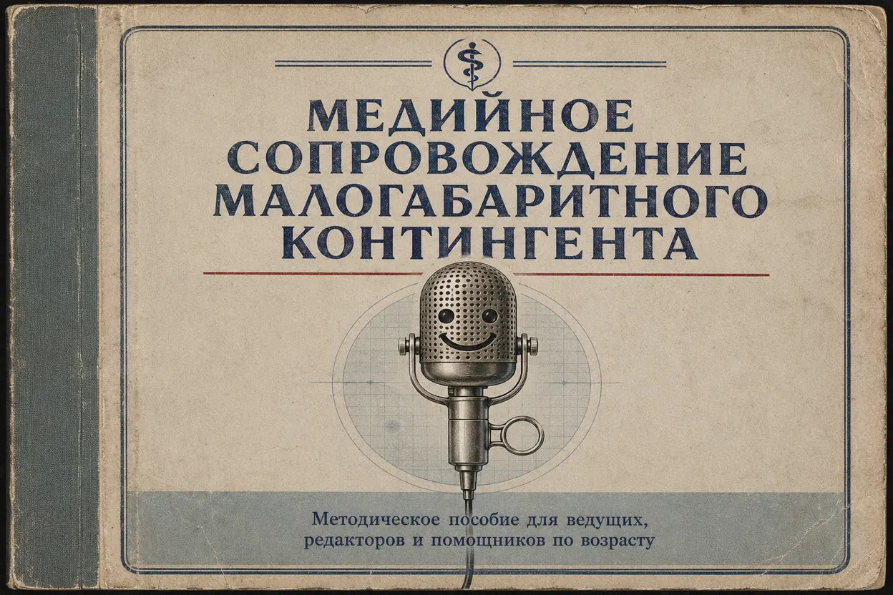
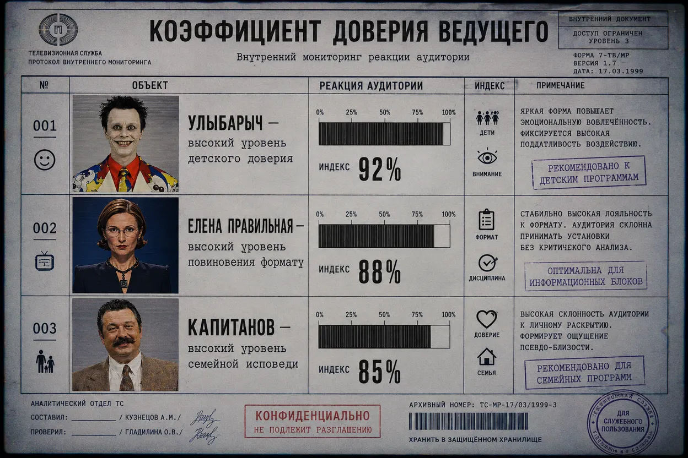
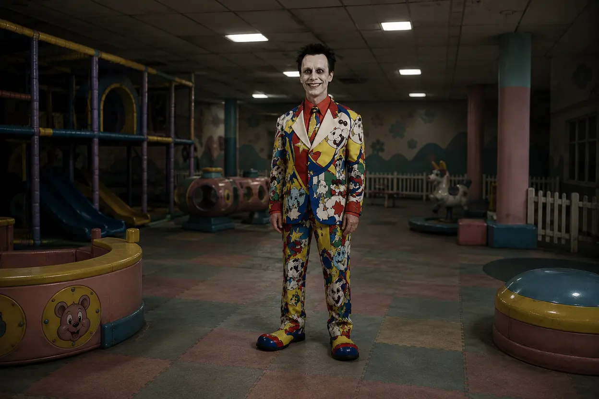
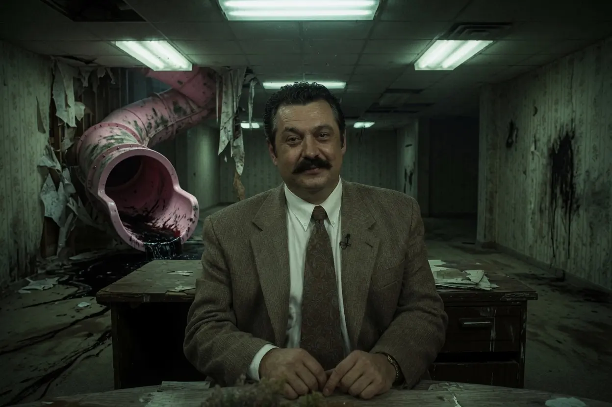

ПРОТОКОЛ 00-689-12/М
О ПЕРВИЧНОЙ ИНТЕГРАЦИИ АДМИНИСТРАЦИИ В ОБЩЕСТВЕННОЕ СОЗНАНИЕ ЧЕРЕЗ РАЗВЛЕКАТЕЛЬНЫЙ ЭФИР
ПРИМЕЧАНИЕ
Данный документ не является признанием существования Администрации.

До появления постоянных комплексов, торговых центров, санаториев, бассейнов и зоопарков Администрация не могла действовать открыто. Прямое изъятие, давление на семьи и административный ресурс давали нестабильный результат. Население сопротивлялось процедурам, если воспринимало их как насилие.
Поэтому был выбран более мягкий способ: эфир.
Телевидение оказалось идеальной средой первичного внедрения. Зритель добровольно смотрит в экран, принимает правила передачи, ждет указаний ведущего и не спорит с форматом. Если программа говорит “выберите дверь” — зритель выбирает дверь. Если ведущая говорит “это правильный ответ” — зритель принимает вердикт. Если детский ведущий обещает, что всё будет весело, — ребенок верит быстрее, чем санитару.
Администрация не создала телевидение. Она лишь обнаружила в нем уже готовую инфраструктуру послушания.

ПЕРВЫЙ ЭТАП
Первый этап программы получил условное название «Мягкий вход».
Цель этапа: приучить общество к тому, что правила, произнесенные из телевизора, имеют силу выше бытовой логики.
В тех случаях, когда коррупция была неэффективна или слишком заметна, Администрация использовала человеческие слабости: тщеславие ведущих, страх продюсеров перед падением рейтингов, зависимость зрителей от ностальгии, родительское желание посадить ребенка перед “безопасной” передачей и забыть о нем на двадцать минут.
Так появились первые медийные проводники.

Дядя Улыбарыч был выбран не за интеллект и не за лояльность. Он был выбран за голос.
Дети уже доверяли ему. Родители уже впустили его в квартиры. Его улыбка уже существовала в семейной памяти. Администрации оставалось только заменить студию на процедурную, песенку — на инструктаж, а зрителя — на материал, который не должен был вырасти.
После закрытия оригинальной передачи Улыбарычу предложили то, от чего он не смог отказаться: аудиторию, которая никогда не взрослеет.
Елена Правильная стала следующим этапом.
Если Улыбарыч работал с детской верой, Елена работала со взрослой привычкой подчиняться игре. Викторина “Правильный Ответ” доказала, что человек готов добровольно подписаться под любым исходом, если исход оформлен как правила шоу.
Вопросы постепенно перестали быть вопросами.
Они стали сортировкой.
Ответы перестали быть ответами.
Они стали согласием.
Фраза “это правильный ответ” в какой-то момент утратила развлекательный смысл и стала служебной командой.

Виталий Капитанов был не вербовщиком, а демонстрацией силы.
Его программа “Семейная Тайна” использовалась как публичная приемная Администрации. В студию приглашались люди, чьи биографии уже пересекались с объектами Детского Жира, но еще не были ими осознаны.
Капитанов задавал вопросы, потому что считал себя ведущим.
Администрация позволяла ему задавать вопросы, потому что знала: настоящий ведущий в студии не он.
312-Й ВЫПУСК
312-й выпуск стал первым зафиксированным случаем назначения человека в Аниматоры прямо через эфир.
Это было не похищение.
Это было кадровое оформление в присутствии зрителей.
Программа была закрыта. Архивы утеряны. Свидетели разошлись по домам. Именно поэтому операция была признана успешной.
Зрители ничего не поняли, но запомнили главное:
- ведущий может исчезнуть;
- гость может оказаться сотрудником;
- игра может быть процедурой;
- детская передача может продолжаться после смерти канала;
- а реклама может произнести юридическую фразу, которая еще не должна существовать.
ВЫВОД КОМИССИИ
Медийная фаза интеграции признана успешной. Общественное сознание подготовлено к дальнейшему внедрению развлекательных локаций Администрации под видом ностальгических пространств: торговых центров, бассейнов, зоопарков, кафе, санаториев и детских студий.
РЕКОМЕНДАЦИЯ
Не объяснять зрителю структуру напрямую.
Оставлять узнаваемые лица.
Оставлять знакомые форматы.
Оставлять ощущение, что он уже видел это в детстве.
Чем сильнее человек уверен, что вспоминает, тем проще ввести его обратно.